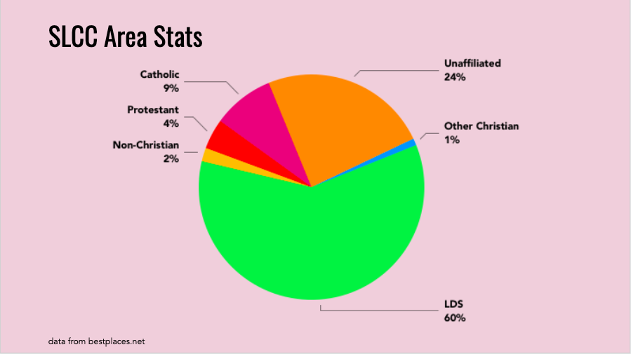

Religious Diversity in America
This course will explore religion in the United States from its foundations in this country to the modern day. From the first encounters of Europeans with our native peoples to the development of parody religions such as the Church of the SubGenious or Pastafarians, we will attempt to answer the question of what role Religion has played, should play and how its consistent presence has sparked America’s spiritual, cultural and political imagination in so many ways.
Writing prompt
We will use the phrase “religious landscape” to describe the people and places within a geographical area connected to organized or institutionalized religions. In other words we are using it demographically to understand what religion looks like where we live and what impact this may have on our culture. This is not, however, a statistics or geospatial class so this will not be a perfect, or even an accurate, rendering of our local neighborhoods (how do you measure the unaffiliated?), but it will, at the very least, give you a starting place to begin your own explorations of these questions.
What does the religious landscape look like in the various communities you belong to (local, regional, national)? How religiously diverse is your community? How does it compare to the nation? How are we handling this diversity and where are we headed? Choose a starting center-point and examine a 3-5 mile area around it. Compile a list of the religions you find in your area and related data. Compare your findings in the neighborhood you chose to data of the religious landscape of Utah, one other random state of your choosing and the nation as a whole. To provide representative examples of the diversity of your community (either local or regional) visit at least two places of worship, a Christian religion and a non-Christian religion. If possible choose religions your group is unfamiliar with. You will attend these together as a group. Organize your findings in slideshow format.
My Religious Landscape
